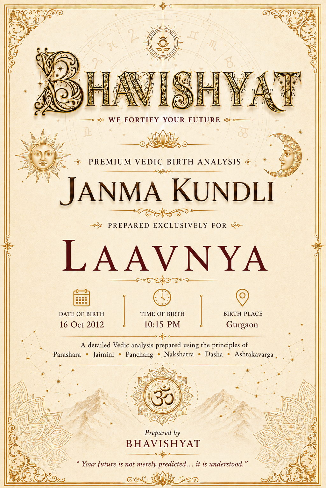
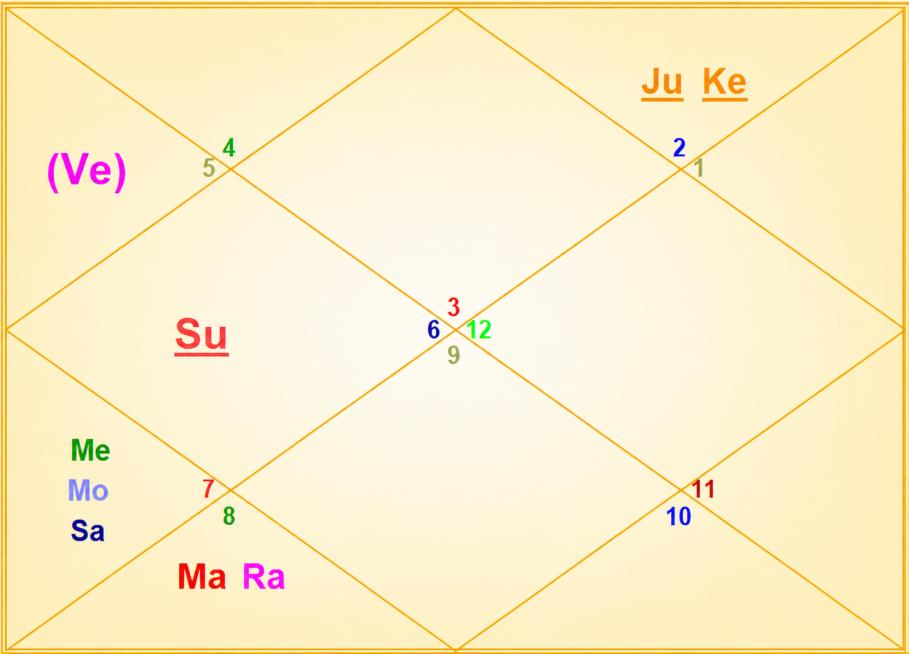

Janma Kundli • Laavnya
Birth Details & Panchang
| Name | Laavnya | Paksha | Shukla |
| Date of Birth | 16 October 2012 | Tithi | Dwitiya (2) |
| Time of Birth | 10:15 PM | Nakshatra | Swati |
| Birth Place | Gurgaon | Vaar | Tuesday |
| Longitude | 77°01' E | Yoga | Preeti |
| Latitude | 28°27' N | Karan | Baalava |
| Ascendant | Gemini | Asc Lord | Mercury |
| Tithi Lord | Moon | Tithi Deity | Brahma |
| Nakshatra Lord | Rahu | Nakshatra Deity | Vayu (Wind God) |
| Yoga Deity | Vishnu | Karan Deity | Brahma |
| Yogi | Mercury | Duplicate Yogi | Moon |
| Abhiyogi | Mars | Dagdha Rashi | Sagittarius (9), Pisces (12) |
Natal Chart (Rashi)

| Planet Distribution | Invisible Half — Lower Half (beginning of life more eventful) | ||
| Ascendant | Gemini (Mithuna) | Moon / Sun Sign | Libra (Tula) / Virgo (Kanya) |
| Malefic | Sun (Surya), Mars (Mangal), Jupiter (Guru) | Shunya Nakshatra | Purva Bhadrapada |
| Maraka | Moon (Chandra) | Dasha Balance | 4Y 11M 29D |
| Badhaka | Jupiter (Guru) | Mangalik | Cancelled |
| Birth Dasha | Ra-Ve-Ra (1-6-1) | ||
Janma Kundli • Laavnya
Favourable Influences
| Benefic Years | 17, 19, 22, 26, 28, 31, 35, 37 | ||
| Favourable Days | Wednesday, Friday, Saturday | ||
| Favourable Planets | Mercury, Venus, Saturn | ||
| Favourable Signs | Aries (1), Leo (5), Sagittarius (9), Pisces (12) | ||
| Favourable Ratna | Emerald | Favourable UpRatna | Peridot, Jade, Serpentine |
| Lucky Ratna | Blue Sapphire, Blue Topaz | Favourable Deity | Ganesh |
| Favourable Metal | Bronze | Favourable Colour | Green |
| Direction | North | Favourable Cereals | Moong |
| Favourable Plant | Coconut Tree | ||
| Favourable Temple | Kashi Vishwanath | ||
Planets in Rashi Chart
| Planet | Lordship | Sign | Nakshatra | Nak. Lord | Nak. Count | Nav Tara | Char Karak |
|---|---|---|---|---|---|---|---|
| Sun | 3L | Virgo (6) | Chitra | Mars | 27 N | 7 | Atmakarak (Life) |
| Moon | 2L | Libra (7) | Swati | Rahu | 1 N | 8 | Putrakarak (5H) |
| Mars | 11L, 6L | Scorpio (8) | Anuradha | Saturn | 3 N | 9 | Gnatikarak (6H) |
| Mercury | 1L, 4L | Libra (7) | Vishakha | Jupiter | 2 N | 4 | Bhratrikaraka (3H) |
| Jupiter | 7L, 10L | Taurus (2) | Rohini | Moon | 17 N | 2 | Amatyakarak |
| Venus | 12L, 5L | Leo (5) | Purva Phalguni | Venus | 24 N | 6 | Matrikarak (4H) |
| Saturn | 8L, 9L | Libra (7) | Swati | Rahu | 1 N | 3 | DaraKarak (7H) |
| Rahu | — | Scorpio (8) | Anuradha | Saturn | 3 N | 1 | — |
| Ketu | — | Taurus (2) | Krittika | Sun | 16 N | 5 | — |
| Debilitated Planet(s) | — | Combust Planet(s) | Saturn |
| Retrograde Planet(s) | Jupiter | ||
Sarvastakvarga & Houses
| Very Strong (35+) | 3H, 10H | ||
| Strong (31-35) | 1H, 7H | ||
| Above Average (28-30) | 2H, 9H, 11H | ||
| Below Average (24-27) | 4H, 6H | ||
| Weak (21-23) | 5H, 8H, 12H | ||
Janma Kundli • Laavnya
Houses in Rashi Chart
| House | Sign | Planets | SAV | Lords | Aspect |
|---|---|---|---|---|---|
| 1H | Gemini (3) | — | 33 | — | Mars |
| 2H | Cancer (4) | — | 30 | — | Saturn, Rahu |
| 3H | Leo (5) | Venus | 37 | 12L, 5L | — |
| 4H | Virgo (6) | Sun | 26 | 3L | Jupiter, Ketu |
| 5H | Libra (7) | Moon, Mercury, Saturn | 22 | 2L; 1L, 4L; 8L, 9L | — |
| 6H | Scorpio (8) | Mars, Rahu | 24 | 11L, 6L | — |
| 7H | Sagittarius (9) | — | 31 | — | Saturn |
| 8H | Capricorn (10) | — | 21 | — | Jupiter, Ketu |
| 9H | Aquarius (11) | — | 28 | — | Mars |
| 10H | Pisces (12) | — | 36 | — | Rahu |
| 11H | Aries (1) | — | 28 | — | — |
| 12H | Taurus (2) | Jupiter, Ketu | 21 | 7L, 10L | — |
Bhinnashtak Varga (BAV)
| Sign | Sa | Ju | Ma | Su | Ve | Me | Mo | Ra |
|---|---|---|---|---|---|---|---|---|
| 3 | 4 | 7 | 5 | 4 | 5 | 5 | 3 | 3 |
| 4 | 3 | 4 | 3 | 6 | 4 | 6 | 4 | 4 |
| 5 | 5 | 4 | 5 | 5 | 6 | 6 | 6 | 3 |
| 6 | 5 | 5 | 1 | 5 | 5 | 4 | 1 | 4 |
| 7 | 3 | 3 | 2 | 3 | 4 | 4 | 3 | 5 |
| 8 | 1 | 6 | 3 | 3 | 2 | 5 | 4 | 2 |
| 9 | 3 | 6 | 3 | 4 | 5 | 4 | 6 | 4 |
| 10 | 2 | 2 | 3 | 3 | 5 | 4 | 2 | 4 |
| 11 | 1 | 6 | 4 | 3 | 6 | 3 | 5 | 4 |
| 12 | 7 | 5 | 5 | 5 | 3 | 5 | 6 | 2 |
| 1 | 4 | 4 | 3 | 3 | 4 | 4 | 6 | 4 |
| 2 | 1 | 4 | 2 | 4 | 3 | 4 | 3 | 4 |
Janma Kundli • Laavnya
Vimshottari Dasha
Maha Dasha
| Dasha Lord | From | To |
|---|---|---|
| Rahu | 17-Oct-1999 | 16-Oct-2017 |
| Jupiter | 16-Oct-2017 | 15-Oct-2033 |
| Saturn | 15-Oct-2033 | 15-Oct-2052 |
| Mercury | 15-Oct-2052 | 15-Oct-2069 |
| Ketu | 15-Oct-2069 | 15-Oct-2076 |
| Venus | 15-Oct-2076 | 15-Oct-2096 |
| Sun | 15-Oct-2096 | 16-Oct-2102 |
| Moon | 16-Oct-2102 | 16-Oct-2112 |
| Mars | 16-Oct-2112 | 16-Oct-2119 |
Antar Dasha (Jupiter Maha Dasha)
| AD Lord | From | To |
|---|---|---|
| Jupiter | 16-Oct-2017 | 04-Dec-2019 |
| Saturn | 04-Dec-2019 | 16-Jun-2022 |
| Mercury | 16-Jun-2022 | 21-Sep-2024 |
| Ketu | 21-Sep-2024 | 28-Aug-2025 |
| Venus | 28-Aug-2025 | 28-Apr-2028 |
| Sun | 28-Apr-2028 | 14-Feb-2029 |
| Moon | 14-Feb-2029 | 16-Jun-2030 |
| Mars | 16-Jun-2030 | 23-May-2031 |
| Rahu | 23-May-2031 | 15-Oct-2033 |
Pratyantar Dasha (Venus Antar Dasha)
| P. Dasha | From | To |
|---|---|---|
| Venus | 28-Aug-2025 | 06-Feb-2026 |
| Sun | 06-Feb-2026 | 27-Mar-2026 |
| Moon | 27-Mar-2026 | 16-Jun-2026 |
| Mars | 16-Jun-2026 | 12-Aug-2026 |
| Rahu | 12-Aug-2026 | 05-Jan-2027 |
| Jupiter | 05-Jan-2027 | 15-May-2027 |
| Saturn | 15-May-2027 | 16-Oct-2027 |
| Mercury | 16-Oct-2027 | 02-Mar-2028 |
| Ketu | 02-Mar-2028 | 28-Apr-2028 |
Janma Kundli • Laavnya
Nav Tara Sequence
| Planet | Chara Karak | House | Lordship | Strength | Nakshatra | Lord | Placement |
|---|---|---|---|---|---|---|---|
| Rahu | — | 6H | — | Below Avg (24-27) | Anuradha | Saturn | 5H |
| Jupiter | Amatyakarak | 12H | 7L, 10L | Weak (21-23) | Rohini | Moon | 5H |
| Saturn | DaraKarak (7H) | 5H | 8L, 9L | Weak (21-23) | Swati | Rahu | 6H |
| Mercury | Bhratrikaraka (3H) | 5H | 1L, 4L | Weak (21-23) | Vishakha | Jupiter | 12H |
| Ketu | — | 12H | — | Weak (21-23) | Krittika | Sun | 4H |
| Venus | Matrikarak (4H) | 3H | 12L, 5L | Very Strong (35+) | Purva Phalguni | Venus | 3H |
| Sun | Atmakarak (Life) | 4H | 3L | Below Avg (24-27) | Chitra | Mars | 6H |
| Moon | Putrakarak (5H) | 5H | 2L | Weak (21-23) | Swati | Rahu | 6H |
| Mars | Gnatikarak (6H) | 6H | 11L, 6L | Below Avg (24-27) | Anuradha | Saturn | 5H |
Birth Chart Nav Tara Chakra
| Rahu (Janam) | 1 | Moon, Saturn | 10 | 19 | ||
| Jupiter (Sampat) | 2 | Mercury | 11 | 20 | ||
| Saturn (Vipat) | 3 | Mars, Rahu | 12 | 21 | ||
| Mercury (Kshem) | 4 | 13 | 22 | |||
| Ketu (Pratyari) | 5 | 14 | 23 | |||
| Venus (Sadhak) | 6 | 15 | 24 | Venus | ||
| Sun (Nidhan) | 7 | 16 | Ketu | 25 | ||
| Moon (Mitra) | 8 | 17 | Jupiter | 26 | ||
| Mars (Ati Mitra) | 9 | 18 | 27 | Sun |
Important Saturn Transits
| 1st Sade Sati | 22 Oct 2038 – 08 Dec 2046 | ||
| 2nd Sade Sati | 30 Aug 2068 – 12 Oct 2076 | ||
| 3rd Sade Sati | 11 Oct 2097 – 29 Nov 2105 | ||
| Ashtam Shani | 24 Jan 2020 – 17 Jan 2023 | ||
Janma Kundli • Laavnya
Other Important Transits
| Type | Planet | House | SAV/BAV | From – To |
|---|---|---|---|---|
| Good | Saturn | 10H | 36, 7 | 29 Mar 2025 – 02 Jun 2027 |
| Good | Saturn | 10H | 36, 7 | 20 Oct 2027 – 23 Feb 2028 |
| Good | Jupiter | 1H to 4H | — | 14 May 2025 – 24 Jul 2028 |
| Good | Ketu | 7H | 31 | 07 Mar 2019 – 23 Sep 2020 |
| Good | Rahu | 1H | 33 | 07 Mar 2019 – 23 Sep 2020 |
| Challenging | Saturn | 9H | 28, 1 | 17 Jan 2023 – 29 Mar 2025 |
| Challenging | Saturn | 12H | 21, 1 | 08 Aug 2029 – 31 May 2032 |
| Challenging | Jupiter | 5H | 22, 3 | 26 Dec 2028 – 29 Mar 2029; 25 Aug 2029 – 25 Jan 2030 |
| Challenging | Jupiter | 8H | 21, 2 | 20 Nov 2020 – 21 Nov 2021 |
| Challenging | Ketu | 4H, 5H | 26, 22 | 12 Apr 2022 – 18 May 2025 |
| Challenging | Rahu | 8H | 21 | 05 Dec 2026 – 23 Jun 2028 |
Lal Kitab Birth Chart
| HN | Rashi | Planets | Varshphal Yr -14 (Oct'25–Oct'26) | Varshphal Yr -15 (Oct'26–Oct'27) |
|---|---|---|---|---|
| 1 | Gemini (3) | — | — | Venus |
| 2 | Cancer (4) | — | Sun | — |
| 3 | Leo (5) | Venus | Venus | Jupiter, Ketu |
| 4 | Virgo (6) | Sun | — | — |
| 5 | Libra (7) | Moon, Mercury, Saturn | Moon, Mercury, Saturn | Mars, Rahu |
| 6 | Scorpio (8) | Mars, Rahu | — | Sun |
| 7 | Sagittarius (9) | — | Mars, Rahu | — |
| 8 | Capricorn (10) | — | — | Moon, Mercury, Saturn |
| 9 | Aquarius (11) | — | Jupiter, Ketu | — |
| 10 | Pisces (12) | — | — | — |
| 11 | Aries (1) | — | — | — |
| 12 | Taurus (2) | Jupiter, Ketu | — | — |
Janma Kundli • Laavnya
Part B — Panchang Insights
Tithi — Shukla Paksha Dwitiya
Gives native intelligence, calm speech, diplomacy, negotiation skill and creativity. Professions such as Lawyer, Arbitrator, Mediator, Diplomat, Banker etc. are aligned with this Tithi. However, this Tithi energy may sometimes push the native towards indecision, which should be taken care of.
Moon — Not Paksha Bali (~9% luminous)
Advisable to perform Ganga Snan by native and her mother periodically. It will also dilute the malefic influence on Moon in birth-chart. Moreover, performing Rudrabhishek every birthday is recommended.
Tithi Deity — Brahma / Lord Vishnu
Worshipping Lord Vishnu enhances the positive energy of this Tithi for the native, and ensures riches and wealth to native.
Vaar — Tuesday
Taking initiative, responsibility, action-oriented, courageous, assertive, competitive but impulsiveness and impatience. Gives technical skill and understanding of subject-matter. Visiting Hanuman Temple on Tuesday and reciting Hanuman Chalisa will align the energy of birth weekday and protect health.
Nakshatra — Swati
Independent and open-minded, lucky; good at sales, business and marketing; in different profession/business from that of family/father. Normally has extended family, big family. Well aware of surroundings/subject matter; street smart; fond of traveling. Fond of collecting unique mug/bottle. Good property yoga / beautiful house.
Yoga — Preeti
Favourable for liaisoning, networking, connections, harmony.
Karan — Baalava (Action)
Popular, strong-minded, artistic, poetic, brave, disciplined, graceful and adaptable. Good for education, learning, creative pursuits, public relations (PR related work).
Dagdha Rashi — Sagittarius (9), Pisces (12)
Fasting on Thursday and chanting Jupiter Mantra, for reducing malefic impact.
Janma Kundli • Laavnya
Rashi Chart Overview
Planet Distribution
As per planetary distribution in Rashi Chart, the beginning part of the life would be more eventful than latter part.
Kal Sarp Yoga
Kal Sarp Yoga in Rashi Chart — take bathe at Har ki Pauri, Haridwar.
Nature, Personality & Appearance — Ascendant Gemini
Talkative, curious, intelligent, sharp-minded, clever, humorous, jovial, friendly, social, great communicator, adaptable, versatile, multi-tasker, loves learning.
Tall and well-formed body, height above average, long slender hands, moderate complexion, depression near chin, active and clear speech, sharp and active eyes, unique/different hair style. Loves books, media, latest technology, travel, conversations; dislikes routine and silence. Aptitude for writing, teaching, media; lifelong learning; strong wealth potential.
Bold with keen understanding of human nature, humane and sympathetic. Remarkable ingenuity, originality and intellectual ability. Grasps situations instantly. Prone to losses through fraud and deception. Variable temperament, restlessness and impatience. Excels in mental pursuits but may lack determination. Business-like attitude with wide knowledge. Brilliant conversationalists, poets, orators, writers and musicians. May pursue two occupations successfully. Obstacles through women and should be cautious with the opposite gender. Interested in philosophy and religion.
Weakness — Gemini Ascendant
Restless, indecisive, anxious, distracted, inconsistent, sometimes superficial (strong Lagna dilutes these impacts).
Moon Sign — Libra
Gentle, compassionate, courteous and honest. Excellent judgment, weighs pros and cons thoroughly before reaching conclusions. Upright, sympathetic, flexible and sensitive. Anger is quickly pacified. Thinks more of others than self. Argues with clarity and foresight. Always stands for justice, harmony, love and peace. Changes residence frequently and enjoys travelling. Likes a high standard of living, good dress, furniture, vehicles and comforts. May have another name associated with a god or goddess. Good trader, popular, good business partner, successful salesman, liaison officer.
Janma Kundli • Laavnya
Impact of Planetary Placements
1st House
Saves lots of money; good result on career. Serve / take care of your parents for wealth/income in life; never fight with mother. [Remedy for Career] Prone to some eye related issues, normally problems in left eye.
2nd House
Good for education and profession, multiple income yoga, may face loneliness.
3rd House
Hard-working, courageous, image conscious, good writing skills, food lover, wins in tough condition [beats competition]. When bad dasha/transit — health issues related to blood (nutrients etc), aggressive and dominant, challenges to maternal relatives.
4th House
Multiple income source (native knows multiple ways of earning money), good at communication; good consultant; good financial knowledge. Good for speculative/stock market income, creative, jovial in nature.
5th House
Good for wealth, spirituality, investment, loves to spend and travel, much expenditures.
6th House
Love to travel, takes bold decisions in life, sweet voice, good at mediation & handling conflict, skilled in art, music, singing, painting, etc; lives in good neighbourhood.
Janma Kundli • Laavnya
Impact of Planetary Placements (contd.)
7th House
Break in education, after celebration — problem comes, makes money through stock market; hard working.
8th House
Winning in competition, gets loans easily; destroys competitors.
9th House
Lots of travelling, eye trouble, good intuition.
10th House
Cancels Mangalik dosh of chart.
11th House
Break in education / change of stream; surgery to self / mother. Frequent change of work / workplace, property dispute. Hearing issues likely to mother of native.
Planetary Combinations
Lots of Travel / Fake Guru
Lots of travel in life, prone to fall for fake guru, native doesn't bless anyone easily.
Mango Tree / God's Blessing
Mango tree near native home; God's blessing.
Moon + Mercury
Very good for wealth; earning from foreign / foreign clients; beware of addiction; gives negative thoughts in relevant dasha period, superstitious beliefs; decision making issues; losses / sickness in travel; skin, nervous system, breathing issues to self or mother.
Saturn + Moon
Vish yoga; gives negative thoughts, seriousness in life, some long disease to mother. Waist / feet pain to native, diabetes prone.
Time & Electric Equipment
Worried about time (to be on time); problem to electric equipment frequently.
Janma Kundli • Laavnya
12 Houses of Rashi Chart
- Talkative, business minded, communicative, writer, indecisive, confusion, on crossroads, playful and intellectual, childlike behaviour, looks younger, quick witted.
- Strong attachment to family. Income from real estate / rent.
- Creative, writing / communication skills, strong will-power. Protective towards siblings, grace in communication style; creative writing; hobbies like singing, dancing, creative art, etc.
- Very good for education and other extracurricular activities.
- Struggle to maternal relatives; disease not gets identified in one go (need for second opinion usually, underlying issues); sudden events in career; work involves research; secret enemies can cause losses.
- Luck supports in business / career growth; good understanding of business management, contracts, mergers, collaborations etc.
- Pilgrimage / religious practices support wish fulfilment; gain after long (religious) travel. Gains through father / mentor / guru.
- Foreign connection to work / MNC / overseas; multiple work. Secretive about career, career could involve some sort of secret environment.
- Connection with people in authority / in powerful position in society. Focus on gains and networking; leads in their group / circle.
- Gain through investments; makes big investment; secretive about family, require luxury, comfort and own secure environment.
- Focussed on good education, learning, upskilling, creative art; luck favours; problem solving skills; gains name / fame in Mercury Dasha/Antar Dasha.
- Wealth yoga, earnings through speculations, consultancy, knowledge based work etc.
Sarvashtakvarga — Yearly Outlook
| Tough Years | 20, 26 | ||
| Good Months of the Year | December – January, June – August | ||
| Challenging Months of the Year | January – March, May – June, October – December | ||
| Lucky People for Native | Leo (5), Pisces (12), Sagittarius (9), Aries (1) | ||
| Unfavourable People for Native | Capricorn (10), Libra (7), Virgo (6), Taurus (2) | ||
| Aptitude | Yoga for wealth, strong personality, multiple skillset and gain of powerful position | ||
| Favourable Months for Starting Education | March – April, June – July | ||
| Strong Lagna | Strong Lagna of native will save from problems — relatively less problems will have to be faced | ||
| Wealth-Giving Dasha / Antardasha | Moon, Ketu, Jupiter, Sun, Mars, Venus, Saturn | ||
| Transit Note | Transit of Jupiter and Saturn very supportive during mid 2025 to mid 2028 | ||
Janma Kundli • Laavnya
12 Houses of Rashi Chart (contd.)
- Mother is strong/dominant natured; neighbourhood impacts peace of mind; frequent changes of residence; property related issues.
- Good for education, income from stock market, finding solution; Raj Yoga.
- Good for sports / recognition, living in good neighbourhood / society.
- Strong will power, competitive / fighting spirit, supportive in profession.
- Secret knowledge, research minded, deep thinker, out of box; unusual / unique ideas.
- Native gets support, yoga for name, fame; good education.
- Likes to work alone, in isolation; good for work in MNC/Abroad; frequent break / change in career / workplace.
- May give revengeful feeling; earnings through loan/debt; gain from service / medical field.
Karmic Remedies — Lal Kitab
- Avoid alcohol & fish; donate food to blinds.
- Always serve your mother for blessings in profession.
- Avoid Tulsi and Money Plant (remove them).
- Throw away copper utensils; keep bed in good shape / clean it well.
- Remove photo or model of Taj Mahal (or any graveyard).
- Wear 3-metal ring. Prefer having meal in the kitchen.
- Never donate pen/pencils/stationery.
- Never donate liquor.
- Water leakage / wastage should be solved, whenever happens.
- Never take pickle / sour / papad etc. from anyone.
Abbreviations
A Sacred Dedication
With Love & Blessings
for Laavnya's journey ahead
बीजं मां सर्वभूतानां विद्धि पार्थ सनातनम्।
बुद्धिर्बुद्धिमतामस्मि तेजस्तेजस्विनामहम्॥ १०॥
हे पार्थ! सम्पूर्ण प्राणियों का सनातन बीज मुझे जान। बुद्धिमानों में बुद्धि और तेजस्वियों में तेज मैं हूँ।
"Know Me as the eternal seed of all beings; I am the intelligence of the intelligent, and the splendour of the splendid."
— Bhagavad Gita, Chapter 7, Verse 10
May Laavnya walk her path with curiosity, courage and creative brilliance — ever guided by the intelligence within her, and ever shining with the light of her own potential.